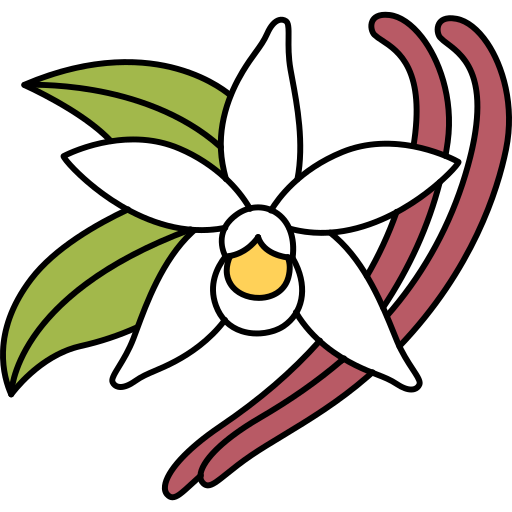
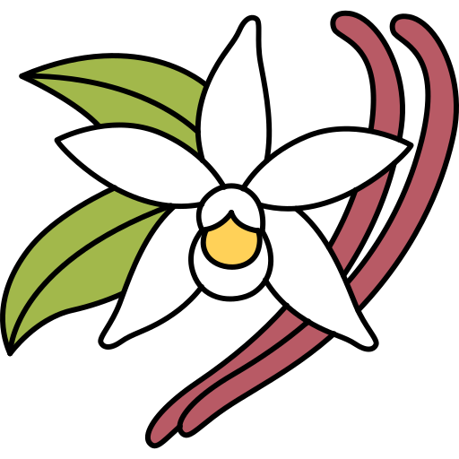

Добро пожаловать на наш сайт!
Мы рады приветствовать вас в мире изысканных ароматов. Наша коллекция духов создана для того, чтобы подчеркнуть вашу индивидуальность и добавить нотки роскоши в повседневную жизнь. Исследуйте наш ассортимент и найдите свой идеальный аромат!
Популярные ароматы
Лаванда
Аромат лаванды известен своими успокаивающими свойствами. Он помогает расслабиться и улучшает качество сна.

Мелисса
Свежий и цитрусовый аромат мелиссы наполняет энергией и бодростью, идеально подходит для утреннего пробуждения.
Лотос
Аромат лотоса символизирует чистоту и гармонию, создавая атмосферу спокойствия и умиротворения.
Наши коллекции

 

Откройте для себя наши уникальные коллекции ароматов, которые включают цветочные, фруктовые и восточные нотки. Каждый аромат — это история, которая ждет, чтобы быть рассказанной.